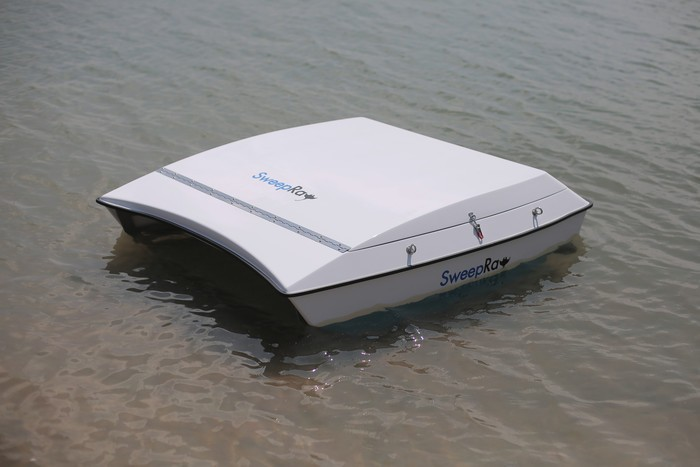
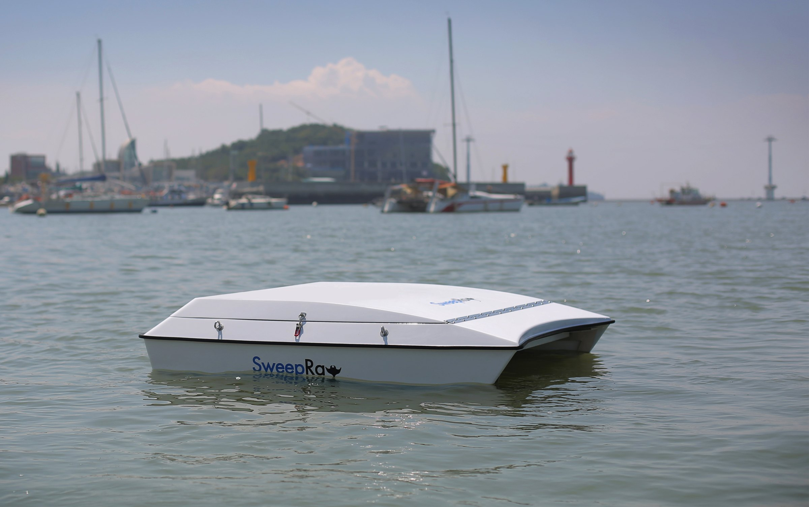

পুনরাবৃত্তিযোগ্য মিশন
Pixhawk/PX4 ও RTK-GPS দিয়ে মিশন চলে, তাই একই পথ বারবার চালানো যায়।


K-water-এর প্রকৌশলীদের সঙ্গে মাঠপর্যায়ের পরীক্ষায় অপারেটরের হস্তক্ষেপ ছাড়াই পরিচ্ছন্নতা, ডকিং ও চার্জিংয়ের সম্পূর্ণ চক্র এবং কয়েক ঘণ্টা ধরে স্বয়ংক্রিয় চলাচল সম্পন্ন হয়েছে।
অপারেটরের হস্তক্ষেপ ছাড়া কাজ করতে হলে নৌযানটিকে নির্ভরযোগ্যভাবে একই মিশন পুনরাবৃত্তি করতে, জলাধারের দেয়াল ও স্থাপনা এড়াতে এবং নিজে ডকিং করে চার্জ নিতে হতো।
এটি সিস্টেমের একটি সরলীকৃত ধারণামূলক চিত্র। বিস্তারিত জানতে যেকোনো অংশ নির্বাচন করুন।
প্রকাশযোগ্য প্রজেক্টের তথ্যের ভিত্তিতে তৈরি সরলীকৃত চিত্র; এটি প্রকৃত পণ্যের নকশা নয়।
Pixhawk/PX4 ও RTK-GPS দিয়ে মিশন চলে, তাই একই পথ বারবার চালানো যায়।
মিশনের সময় LiDAR-ভিত্তিক বাধা এড়ানোর ব্যবস্থা জলযানকে জলাধারের দেয়াল ও স্থাপনা থেকে দূরে রাখে।
Jetson Nano-তে AprilTag-এর নির্দেশনা অনুসরণ করে নৌযানটি ডকে পৌঁছায়। সঠিকভাবে অবস্থান নেওয়ার পর ইলেকট্রোম্যাগনেট দিয়ে নৌযানটি স্থির রাখা ও ওয়্যারলেস চার্জিং চালু করা হয়।